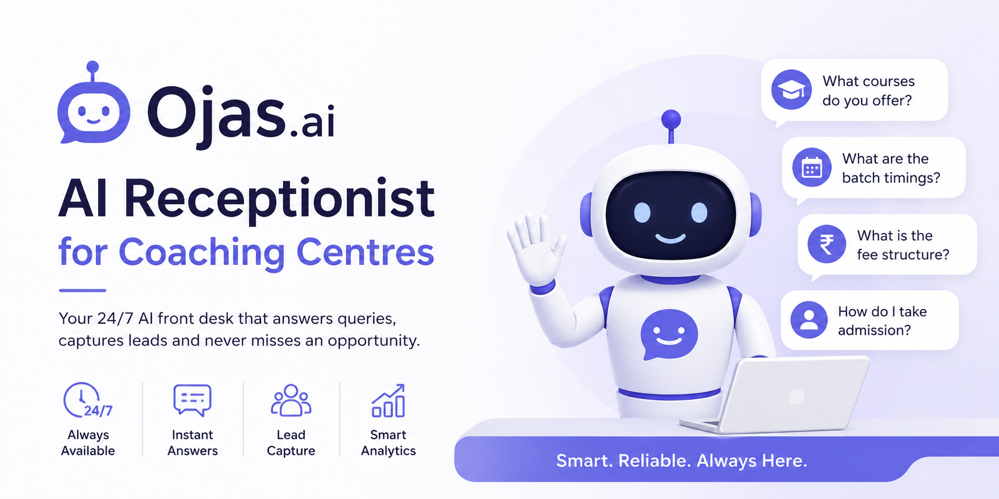

Ojas.ai
AI Receptionist for Coaching Centres 🎓🤖
Ojas.ai is an AI-powered virtual receptionist designed specifically for coaching centres, training institutes, and educational organizations. It acts as a 24/7 front-desk assistant that instantly responds to student and parent inquiries, ensuring no admission opportunity is missed due to limited staff availability.

Problem Statement
Many coaching centres face common operational challenges that silently cost them admissions — especially during peak inquiry seasons when staff bandwidth is at its limit.
Solution
Ojas.ai functions as an intelligent AI receptionist — the first point of contact for students and parents. The system is trained using institution-specific information and responds to inquiries using approved knowledge sources.
Whether a parent asks about admission fees at midnight or a student wants information about available batches during a holiday, Ojas.ai provides immediate and consistent answers. The platform combines conversational AI, knowledge retrieval, and lead capture workflows to create a seamless admission assistance experience.
Key Features
24/7 AI Receptionist
Provides uninterrupted support beyond office hours, weekends, and holidays — never misses an inquiry.
Intelligent Q&A Engine
Accurately answers queries on courses, admissions, fees, batch schedules, faculty, scholarships, and institute policies.
Institution Knowledge Base
Uses institute-provided documents and information sources to ensure responses remain accurate, approved, and relevant to the institution.
Lead Capture System
Collects prospect details — name, phone, email, course interest, preferred batch, and inquiry category — and stores them for follow-up by the admissions team.
Multi-Channel Deployment
Deployable across WhatsApp, institute websites, student portals, and mobile applications — meeting students where they already are.
Conversation Analytics
Provides visibility into common student questions, inquiry trends, lead volume, admission interest patterns, and frequently requested courses.
System Workflow
Benefits for Coaching Centres
Improved Admission Conversions
Immediate responses increase the likelihood that prospective students continue their admission journey.
Reduced Administrative Burden
Reception staff can focus on high-value interactions rather than answering repetitive questions.
Better Student Experience
Students and parents receive instant assistance whenever they need information — day or night.
Cost Efficiency
Reduces dependency on additional front-office personnel during peak admission periods.
Increased Accessibility
Provides support even when the institute is closed — holidays, weekends, and after hours.
Data-Driven Insights
Helps management understand student interests, peak inquiry times, and admission behavior patterns.
Use Cases
Technology Highlights
"Not just a chatbot — a digital front desk for every coaching centre."Ojas.ai